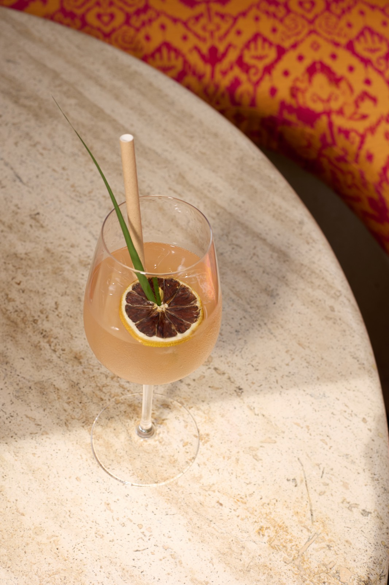

Our Food
Grown on our farm, smoked over one slow fire, and cooked the long way round.

Ngong Road · Karen · Nairobi
Est. 1990s
An old house in Karen turned into one of Kenya’s most loved restaurants — fine dining, in-house smoking, and a room full of art collected over thirty years.
Take the walk


Elegance & Ambience
The Talisman is an old Karen house that never quite stopped being one. Stained glass throws colour across the walls, carved wood and collected art fill every corner, and lanterns come on as the light goes. It is elegant without ever being formal — the kind of room where you lower your voice a little, then forget to leave.
The food is cooked the long way round. Herbs and greens come from our own farm, harvested in the morning and in the kitchen by lunch. Our salmon is cured and smoked here, over one slow fire, exactly as it has been for years. Stocks reduce overnight; bread is proved slowly and baked at dawn.
What holds it together is a dedication that rarely announces itself — a kitchen that refuses shortcuts, a team who know regulars by name, and a table nobody will ever ask you to give up. You come for lunch and stay past sunset, and that has always been the point.
A kitchen that grows most of what it serves, and a bar that picks its mint and lemongrass from the garden you are sitting in. Everything else we buy from people we know by name.



Where the afternoon slows down, and the evening takes its time


For the whole family
The garden isn’t a backdrop — it’s the point. Space for children to run and play while lunch stretches into the afternoon. Couches in the green for the grown-ups. A family moment that doesn’t need a screen.
Grown on our farm, smoked over one slow fire, and cooked the long way round.

An old house on Ngong Road that became a garden, a farm and a fireplace.

New wall art every month, live DJs and musicians in the room — never on a stage.

Chapter III
01 / 06

02 / 06

03 / 06

04 / 06

05 / 06

06 / 06


For the whole family
The garden isn’t a backdrop — it’s the point. There is room for children to run and play while lunch stretches into the afternoon, couches in the green for the grown-ups, and nobody watching the clock. Bring everyone. Bring the grandparents. Stay until the lanterns come on.
Contact
No booking engines, no bots. Leave your details and a member of our team will call you back to plan your visit — birthdays, brunches, or just a Tuesday that deserves better.